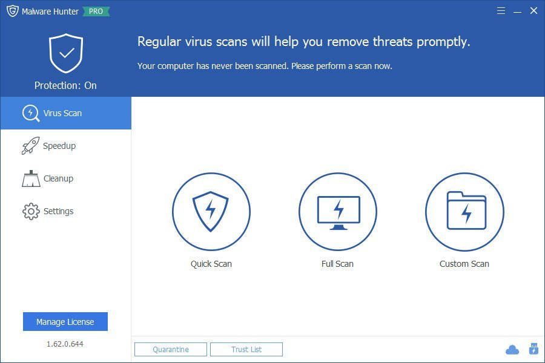

============================

Stats
Title: Glary Malware Hunter Pro 1.157.0.774 Full Version
Category: Apps
Type: PC Software
Language: English
Total size: 98.7 MB
Uploaded By: Rainbowrave
============================
Info:
!!! Remember I don't own or edit anything on links that might be on this torrent!!!

Glary Malware Hunter Pro Overview
Detects malicious files on your computer and erases dangerous content, allowing you to run on-demand scans of important system areas or specific files. As suggested by its name, Malware Hunter is designed to search and eliminate potentially dangerous files and components on your computer, keeping it free from viruses and other types of threats.
Key Features of Glary Malware Hunter Pro
Malware Scan
Scan your computer quickly and thoroughly. Detect and remove stubborn malware to prevent potential danger. Support scheduled scan to save your time.
Speed Up
Help you optimize your system to speed up and boost your computer performance.
Disk Cleaner
Clean up temporary & unnecessary files. Remove unneeded documents to save computer storage space.
Process Protection
Protect your PC from malware, such as Trojan, worms, spyware, and other online threats.
AntiVirus Scanned Result:
Setup: https://www.virustotal.com/gui/file/e4b5f023f1de20b244dc8fc8d79fd3b253d6ccaea5bf7480de4902bbc559e78c
Crack: https://www.virustotal.com/gui/file/d799350ae00e65aba28da1e2bb6efb9a58e4c3efa62823d6c46e93f7437ef78a
============================
Stats
Title: Glary Malware Hunter Pro 1.157.0.774 Full Version
Category: Apps
Type: PC Software
Language: English
Total size: 98.7 MB
Uploaded By: Rainbowrave
============================
Info:
!!! Remember I don't own or edit anything on links that might be on this torrent!!!

Glary Malware Hunter Pro Overview Detects malicious files on your computer and erases dangerous content, allowing you to run on-demand scans of important system areas or specific files. As suggested by its name, Malware Hunter is designed to search and eliminate potentially dangerous files and components on your computer, keeping it free from viruses and other types of threats. Key Features of Glary Malware Hunter Pro Malware Scan Scan your computer quickly and thoroughly. Detect and remove stubborn malware to prevent potential danger. Support scheduled scan to save your time. Speed Up Help you optimize your system to speed up and boost your computer performance. Disk Cleaner Clean up temporary & unnecessary files. Remove unneeded documents to save computer storage space. Process Protection Protect your PC from malware, such as Trojan, worms, spyware, and other online threats. AntiVirus Scanned Result: Setup: https://www.virustotal.com/gui/file/e4b5f023f1de20b244dc8fc8d79fd3b253d6ccaea5bf7480de4902bbc559e78c Crack: https://www.virustotal.com/gui/file/d799350ae00e65aba28da1e2bb6efb9a58e4c3efa62823d6c46e93f7437ef78a